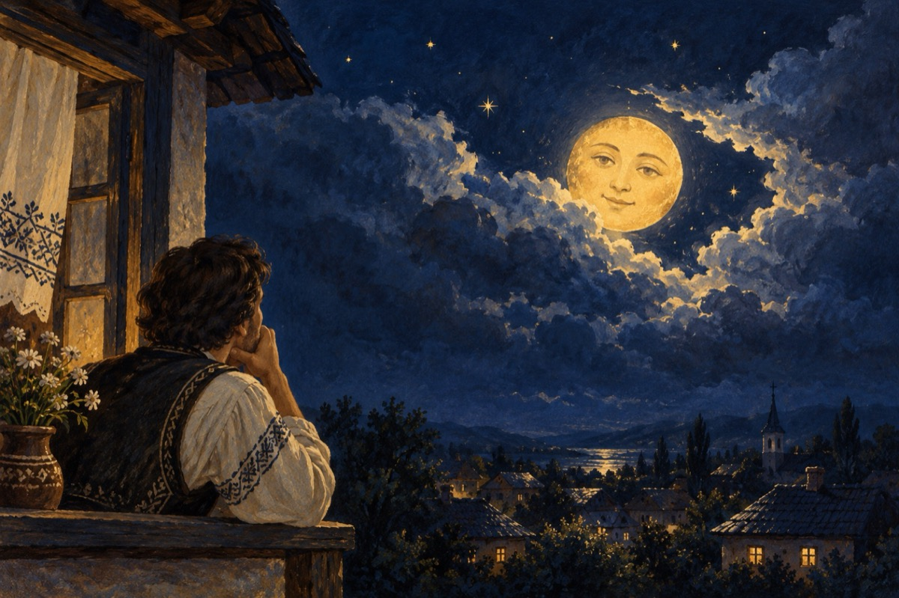

Chiar așa
Cum poți să scrii de veselie
Când cerul e întunecat de nori
Când ploaia ca din sită cerne
Iar tu să crezi că soarele e-n zori
Afară dă să fie vreme caldă
Tu însă tremuri și-ai răcit
Niște păsări nebune se scaldă
Natura într-un cui s-a priponit
Găinile spre seară intră-n coștereață
Care de care mai gălăgioase
Cocoșii pe puicuțe le învață
Să fie blânde când sunt curtate, nu geloase!
Câinii latră doar la nimeni
Și glasurile le dreg pentru mâncare
Ici, colo câte-un grup de tineri
Vorbesc și cântă, e veselie mare!
Și noaptea încet peste tot coboară
Până și norii au plecat aiurea
Au început și stelele ca să răsară
Până și luna în decor se vrea!
Iar eu cu ochii îndreptați spre lună
Încep să îmi revin la matcă
Simțind că totul dă a vreme bună
Și soarele acasă-o să se-ntoarcă!
Vasile Groza